连续 LTI 系统的卷积公式推导¶
浙江大学 2022《信号与系统》（胡浩基）第二章（教材第 38 页）听课笔记
1 从一道画图题出发：已知一对，推另一对¶
和离散时的思路一样：已知一个输入通过 LTI 系统的输出，求别的输入的输出。每一步只用一条性质；难度逐步增加，最后推广到任意输入（第 2、4 节）。
1.1 复习：连续时间的线性与时不变¶
重点
-
线性系统（对任意输入）：
-
齐次性(homogeneity)：\(x(t)\to y(t)\)，则 \(a\,x(t)\to a\,y(t)\)，\(a\in\mathbb{R}\) 任意；
-
叠加性(superposition)：\(x_1(t)\to y_1(t)\)、\(x_2(t)\to y_2(t)\)，则 \(x_1(t)+x_2(t)\to y_1(t)+y_2(t)\)。
-
-
时不变系统：\(x(t)\to y(t)\)，则 \(x(t-t_0)\to y(t-t_0)\)，\(t_0\in\mathbb{R}\) 任意。
和离散的区别：离散的平移量 \(n_0\) 只能是整数，连续的 \(t_0\) 可以是任意实数。
1.2 已知条件¶
题目改编自教材第 34 页 1-23（原题三角波高度为 \(2\)，这里取 \(1\)，做法不变，图更直观）：一个 LTI 系统，输入 \(0\) 到 \(2\) 之间高度为 \(1\) 的方波，输出 \(0\) 到 \(2\) 之间、峰值为 \(1\) 的三角波。
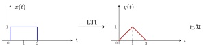
图 1 已知条件：\([0,2]\) 上高度为 \(1\) 的方波，输出是 \([0,2]\) 上的三角波，在 \(t=1\) 处达到峰值 \(1\)。
下面三道题，每题用一条性质，从已知推到未知。
例 1 方波高度变成 2 齐次性
题目：输入仍在 \([0,2]\) 上，高度变成 \(2\)，送进同一个 LTI，输出是什么？
解：输出是 \([0,2]\) 上峰值为 \(2\) 的三角波。
依据：齐次性。输入是原来的 \(2\) 倍（\(a=2\)），输出也是原来的 \(2\) 倍。
例 2 方波右移到 [2,4] 时不变性
题目：输入是 \([2,4]\) 上高度为 \(1\) 的方波（原方波右移 \(2\)），送进同一个 LTI，输出是什么？
解：输出是 \([2,4]\) 上的三角波，峰值 \(1\) 在 \(t=3\)。
依据：时不变性。输入右移 \(t_0=2\)，输出也右移 \(2\)。
例 3 两段台阶相加 叠加性
题目：输入在 \([0,2]\) 上为 \(2\)、在 \([2,4]\) 上为 \(1\)，送进同一个 LTI，输出是什么？
解：这个输入就是例 1 与例 2 的输入之和，所以输出是例 1 与例 2 的输出之和：\([0,2]\) 上峰值为 \(2\) 的三角波，加上 \([2,4]\) 上峰值为 \(1\) 的三角波。
依据：叠加性。
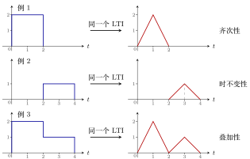
图 2 例 1–例 3 的输入（左）与输出（右）。例 3 的输入是例 1、例 2 输入之和，输出也是两者输出之和。
重点
三道题用三条性质：
例 1：输入乘 \(a\)，输出也乘 \(a\) \(\Rightarrow\) 齐次性。
例 2：输入右移 \(t_0\)，输出也右移 \(t_0\) \(\Rightarrow\) 时不变性。
例 3：输入相加，输出也相加 \(\Rightarrow\) 叠加性。
1.3 加难度：台阶有重叠的输入¶
例 4 三段台阶：1、2、1 拆成两个方波
题目：输入在 \([0,1]\) 上为 \(1\)、\([1,2]\) 上为 \(2\)、\([2,3]\) 上为 \(1\)，送进同一个 LTI，输出是什么？
▸ 做法：把输入拆成两个方波。
两个方波在 \([1,2]\) 上重叠，叠起来高度正好是 \(2\)。第一个方波的输出是已知的三角波 \([0,2]\)；第二个方波由时不变性，输出是三角波右移 \(1\)，即 \([1,3]\) 上的三角波。由叠加性，\(y(t)\) 是两个三角波之和。
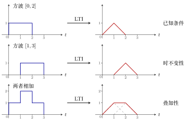
图 3 拆成两个方波，各自过 LTI，再相加。最后一行虚线是两个三角波，实线是它们的和：一个梯形，在 \([1,2]\) 上是平的。
▸ 逐段相加。 三角波 \([0,2]\) 在 \([0,1]\) 上是 \(t\)，在 \([1,2]\) 上是 \(2-t\)；三角波 \([1,3]\) 在 \([1,2]\) 上是 \(t-1\)，在 \([2,3]\) 上是 \(3-t\)。
| 区间 | \([0,1]\) | \([1,2]\) | \([2,3]\) |
|---|---|---|---|
| 三角波 \([0,2]\) | \(t\) | \(2-t\) | \(0\) |
| 三角波 \([1,3]\) | \(0\) | \(t-1\) | \(3-t\) |
| 相加 \(y(t)\) | \(t\) | \(\mathbf{1}\) | \(3-t\) |
关键在 \([1,2]\) 段：一条下降线加一条上升线，两者斜率相反，每一点相加都等于 \(1\)，所以这一段正好是平的。答案是梯形：\(0\to1\) 上升，\(1\to2\) 保持 \(1\)，\(2\to3\) 下降。
说明
易错点：输入在 \([1,2]\) 上高度为 \(2\)，容易误以为输出在那里出现一个峰值为 \(2\) 的尖。实际上要先拆成两个完整的方波（\([0,2]\) 和 \([1,3]\)），再把它们的输出相加。不能拆成 \([0,1]\)、\([1,2]\)、\([2,3]\) 三段单独的窄方波，因为宽度为 \(1\) 的方波的输出不知道（见第 2 节例 1）。
2 任意输入：用阶梯函数逼近¶
2.1 阶梯函数(step function)¶
已知「\([0,2]\) 方波 \(\to\) \([0,2]\) 三角波」，任意一个波形 \(x(t)\) 的输出，用现有的知识求不出精确解。但可以求近似解：
重点
用宽度为 \(2\) 的台阶拼出一条阶梯函数(step function)来近似 \(x(t)\)。每个台阶都是已知方波经过「乘高度、平移」得到的，它的输出就是一个同样高度、同样位置的三角波。把这些三角波加起来，就得到近似的 \(y(t)\)。
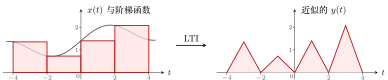
图 4 左：灰色曲线是 \(x(t)\)，红色阶梯每 \(2\) 个单位跳一次，台阶高度取该段左端点处 \(x(t)\) 的值。右：每个台阶输出一个三角波，台阶矮，三角波就矮；台阶高，三角波就高。
2.2 台阶越窄，近似越准¶
每隔 \(2\) 个单位才跳一次的阶梯函数太粗糙。要让近似更准，只能改变已知条件：如果知道的是 \([0,1]\) 方波的输出，就能用每隔 \(1\) 跳一次的阶梯函数去近似；如果知道 \([0,0.5]\) 方波的输出，就能每隔 \(0.5\) 跳一次，更精确。
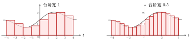
图 5 同一条 \(x(t)\)，台阶宽度从 \(1\) 缩到 \(0.5\)，阶梯函数和曲线之间的缝隙明显变小。前提是知道对应宽度方波的输出。
例 1 方波宽度减半，输出会不会也减半？ 不会
题目：已知 \([0,2]\) 方波 \(\to\) \([0,2]\) 三角波。那么 \([0,1]\) 方波（高度仍为 \(1\)）通过同一个 LTI，输出是不是 \([0,1]\) 上峰值为 \(1\) 的三角波？
解：不是。用反证法：假设 \([0,1]\) 方波 \(\to\) \([0,1]\) 三角波。
-
由时不变性，\([1,2]\) 方波 \(\to\) \([1,2]\) 三角波；
-
\([0,2]\) 方波 \(=\) \([0,1]\) 方波 \(+\) \([1,2]\) 方波，由叠加性，它的输出是 \([0,1]\)、\([1,2]\) 两个小三角波之和；
-
但已知 \([0,2]\) 方波的输出是一个大三角波，两者矛盾。
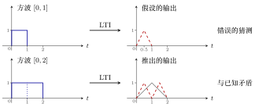
图 6 上：错误的猜测。下：照这个猜测，\([0,2]\) 方波的输出应是两个小三角波（红虚线），与已知的一个大三角波（灰实线）不符，所以猜测错误。
重点
方波宽度压缩一半，输出不是把三角波也压缩一半。LTI 的几条性质（齐次性、叠加性、时不变性）都不能把「宽度为 \(2\) 的方波的输出」变成「宽度为 \(1\) 的方波的输出」。\([0,1]\) 方波的输出到底是什么，要学完第三章才能求。
2.3 极限：无限窄的方波¶
台阶宽度 \(2\to1\to0.5\to\cdots\)，近似越来越精确。最理想的是知道一个无限窄的方波（宽度趋于 \(0\)）通过系统的输出：知道了它，就能求出所有 \(x(t)\) 对应的输出。
这个无限窄的方波就是冲激函数 \(\delta(t)\)（第一章）。要得到连续 LTI 系统的输入输出关系，必须用到它，所以第二章要先把它讲清楚。
3 冲激函数与冲激响应¶
3.1 冲激函数 \(\delta(t)\) 的定义¶
冲激函数可以想成一个无限窄的方波。为了精确定义它，先定义一个辅助函数 \(\delta_\Delta(t)\)（教材第 12 页图 1-25）：
重点
-
\(\delta_\Delta(t)\)：从 \(0\) 到 \(\Delta\) 的方波，宽度为 \(\Delta\)，高度为 \(\dfrac1\Delta\)，面积恒为 \(1\)。
-
冲激函数(impulse function)：
\[ \delta(t)=\lim_{\Delta\to0}\delta_\Delta(t). \]宽度趋于 \(0\) 时，高度 \(\dfrac1\Delta\) 趋于无穷大。
-
画法（人为规定，教材第 12 页图 1-26）：在 \(t=0\) 处画一个向上的箭头，旁边写 \((1)\)，表示「\(1\) 倍的 \(\delta(t)\)」，即面积为 \(1\)，不是高度为 \(1\)。
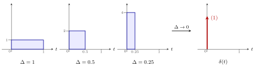
图 7 \(\delta_\Delta(t)\) 随 \(\Delta\) 变小：越来越窄、越来越高，面积始终为 \(1\)（\(1\times1\)、\(0.5\times2\)、\(0.25\times4\)）。极限就是冲激函数 \(\delta(t)\)，画成 \(t=0\) 处的箭头，标 \((1)\)。
3.2 冲激响应¶
-
设 \(\delta_\Delta(t)\) 通过 LTI 系统的输出为 \(h_\Delta(t)\)（某个函数）。
-
\(\delta(t)=\lim\limits_{\Delta\to0}\delta_\Delta(t)\) 通过同一个 LTI 系统的输出记作 \(h(t)\)：
\[ h(t)=\lim_{\Delta\to0}h_\Delta(t)\qquad(\text{假设这个极限存在}). \]
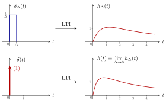
图 8 上：窄方波 \(\delta_\Delta(t)\) 的输出 \(h_\Delta(t)\)。下：\(\Delta\to0\) 时输入变成 \(\delta(t)\)，输出变成 \(h(t)\)。右边的曲线只是示意形状，具体由系统决定。
重点
冲激响应(impulse response) \(h(t)\)：冲激函数 \(\delta(t)\) 输入 LTI 系统得到的输出。它对应离散时的单位脉冲响应 \(h[n]\)。
4 推导连续卷积公式¶
思路和离散完全一样：拆成窄方波 \(\to\) 每个窄方波单独过系统 \(\to\) 加起来；唯一多出的一步是最后令 \(\Delta\to0\)。
4.1 第一步：把 \(x(t)\) 写成窄方波之和¶
用宽度为 \(\Delta\) 的阶梯函数近似 \(x(t)\)：在 \([k\Delta,(k+1)\Delta)\) 上取高度 \(x(k\Delta)\)（左端点处 \(x(t)\) 的值）。把这条红色阶梯函数记作 \(x_\Delta(t)\)：
重点
这是整个推导中最难理解的一步，下面逐块解释。
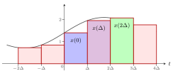
图 9 阶梯函数 \(x_\Delta(t)\) （红色）由一块块宽为 \(\Delta\) 的矩形拼成，灰色曲线是 \(x(t)\)。蓝、紫、绿三块分别对应 \(k=0,1,2\)，高度是左端点处的 \(x(0)\)、\(x(\Delta)\)、\(x(2\Delta)\)。
▸ 蓝色块（\(k=0\)）。 它从 \(0\) 到 \(\Delta\)，高度 \(x(0)\)，等于
原因：\(\delta_\Delta(t)\) 是 \(0\) 到 \(\Delta\) 的方波，高度 \(\frac1\Delta\)；乘 \(\Delta\) 后高度变成 \(1\)；再乘 \(x(0)\)，高度变成 \(x(0)\)。
▸ 紫色块（\(k=1\)）。 它从 \(\Delta\) 到 \(2\Delta\)，高度 \(x(\Delta)\)，等于
\(\delta_\Delta(t-\Delta)\) 是把 \(0\) 到 \(\Delta\) 的方波右移 \(\Delta\)，变成 \(\Delta\) 到 \(2\Delta\) 的方波；乘 \(\Delta\) 的作用和蓝色块一样，把高度 \(\frac1\Delta\) 变成 \(1\)，再由 \(x(\Delta)\) 定高度。
▸ 绿色块（\(k=2\)）。 从 \(2\Delta\) 到 \(3\Delta\)，高度 \(x(2\Delta)\)，等于 \(x(2\Delta)\,\delta_\Delta(t-2\Delta)\cdot\Delta\)：方波右移 \(2\Delta\)。
以此类推，第 \(k\) 块是 \(x(k\Delta)\,\delta_\Delta(t-k\Delta)\cdot\Delta\)，把所有块加起来就是上面的公式。
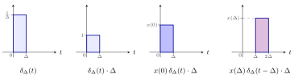
图 10 一块矩形是怎么来的：\(\delta_\Delta(t)\) 高 \(\frac1\Delta\)，乘 \(\Delta\) 后高 \(1\)，再乘 \(x(0)\) 后高 \(x(0)\)（蓝色块）。把方波右移 \(\Delta\)、乘 \(x(\Delta)\)，得到紫色块。
说明
从这里到「取极限」之前的内容，依据见 Oppenheim《Signals and Systems》（第 2 版）第 92–93 页式 (2.24)–(2.27)、图 2.12–2.13，以及第 128 页 2.5.1 节。唯一例外是「三角形积木得到折线」，见下文的存疑标记。
▸ 和式算出的是高度，不是面积。 \(x(k\Delta)\cdot\Delta\) 看上去像「高度乘宽度」，容易误以为在求面积。把乘法换一种方式组合：
中括号里乘的 \(\Delta\) 只起一个作用：把 \(\delta_\Delta\) 的高度 \(\frac1\Delta\) 抵消成 \(1\)。再乘 \(x(k\Delta)\)，得到高度为 \(x(k\Delta)\) 的台阶。
另一种组合 \(\big[x(k\Delta)\cdot\Delta\big]\cdot\delta_\Delta(t-k\Delta)\) 也成立：\(x(k\Delta)\cdot\Delta\) 是这块矩形的面积，\(\delta_\Delta\) 再把这块面积摊在宽 \(\Delta\) 的格子上，高度 \(=\) 面积 \(\div\) 宽 \(=x(k\Delta)\)。两种读法结果相同，在任一个 \(t\) 上读到的都是高度。
不直接写成「高度 \(\times\) 门」，是为了第三步取极限：\(\Delta\to0\) 时 \(\delta_\Delta\to\delta\)、\(\Delta\to\mathrm{d}\tau\)，和式才能变成积分；而「高 \(1\) 的门」在 \(\Delta\to0\) 时会变成一条宽度为零的线，取不出有用的极限。
▸ 每个 \(t\) 上只有一项不为零。 和式有无穷多项，但对一个固定的 \(t\)，只有一项不为零，所以 \(x_\Delta(t)\) 等于那一格的高度。这一点要把 \(\delta_\Delta\) 的定义代进去才能算出来：\(\delta_\Delta\) 是一个分段函数，
-
代入：把 \(t\) 换成 \(t-k\Delta\)，
\[ \delta_\Delta(t-k\Delta)= \begin{cases} \dfrac1\Delta, & 0\le t-k\Delta\lt{}\Delta,\\[4pt] 0, & \text{其他}. \end{cases} \] -
解不等式：\(t\) 是要求的那个时刻，固定不动；未知的是 \(k\)。把 \(0\le t-k\Delta\lt{}\Delta\) 拆成两半：
\[ \begin{align*} 0\le t-k\Delta &\;\Longrightarrow\; k\Delta\le t \;\Longrightarrow\; k\le \frac t\Delta,\\ t-k\Delta\lt{}\Delta &\;\Longrightarrow\; t-\Delta\lt{}k\Delta \;\Longrightarrow\; k\gt{}\frac t\Delta-1. \end{align*} \]合起来：
\[ \frac t\Delta-1\lt{}k\le\frac t\Delta . \] -
数整数：这个区间长度正好为 \(1\)，左端开、右端闭。\(k\) 只能取整数，而长度为 \(1\) 的左开右闭区间里恰好有一个整数：长度为 \(1\)，所以至少有一个；左端是开的，所以不会两端都是整数，最多只有一个。这个整数就是 \(\frac t\Delta\) 向下取整(floor)，记作 \(\big\lfloor \frac t\Delta\big\rfloor\)（去掉小数部分，例如 \(\lfloor 2.4\rfloor=2\)）。
-
结论：除 \(k=\lfloor t/\Delta\rfloor\) 外，其余各项的 \(\delta_\Delta(t-k\Delta)=0\)，整项为 \(0\)。
重点
\(\delta_\Delta\) 在宽 \(\Delta\) 的一小段以外都等于 \(0\)，所以对固定的 \(t\)，和式中只有 \(k=\lfloor t/\Delta\rfloor\) 这一项不为零：
即 \(t\) 所在那一格左端点处 \(x\) 的值。
例 1 代数字验算 只剩 \(k=2\)
题目：\(\Delta=0.5\)，求 \(x_\Delta(1.2)\)；再求格子边界上的 \(x_\Delta(1.0)\)。
解：\(t=1.2\) 时 \(\frac t\Delta=2.4\)，范围 \(1.4\lt{}k\le2.4\)，其中的整数只有 \(k=2\)。逐项检查 \(t-k\Delta\) 是否落在 \([0,0.5)\)：
| \(k\) | \(t-k\Delta\) | 在 \([0,0.5)\) 里吗 | 这一项 |
|---|---|---|---|
| \(0\) | \(1.2\) | 太大 | \(0\) |
| \(1\) | \(0.7\) | 太大 | \(0\) |
| \(\mathbf{2}\) | \(\mathbf{0.2}\) | 在 | \(x(1.0)\cdot\frac1{0.5}\cdot0.5=\boldsymbol{x(1.0)}\) |
| \(3\) | \(-0.3\) | 负数 | \(0\) |
| \(4\) | \(-0.8\) | 负数 | \(0\) |
\(k\) 太小时 \(t-k\Delta\) 偏大，\(k\) 太大时 \(t-k\Delta\) 为负，只有中间一个 \(k\) 合适。所以 \(x_\Delta(1.2)=0+\cdots+0+x(1.0)+0+\cdots=x(1.0)\)。
\(t=1.0\) 时 \(\frac t\Delta=2\)，范围 \(1\lt{}k\le2\)：\(k=1\) 不满足（左端不含），只有 \(k=2\)。格子写成左闭右开 \([k\Delta,(k+1)\Delta)\)，边界点 \(1.0\) 只归第 \(2\) 格，仍然只有一项，\(x_\Delta(1.0)=x(1.0)\)。
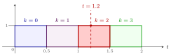
图 11 \(\Delta=0.5\) 时各项 \(\delta_\Delta(t-k\Delta)\cdot\Delta\) 都是高 \(1\)、宽 \(0.5\) 的门，依次占据 \([0,0.5)\)、\([0.5,1)\)、\([1,1.5)\)、\([1.5,2)\)，不重叠、无空隙。竖虚线 \(t=1.2\) 只穿过 \(k=2\) 的门（红色），其余门在这里都是 \(0\)。
▸ \(\delta_\Delta\) 的分段定义是人为规定的。 \(\delta_\Delta\) 不是推出来的，而是为了拼台阶专门设计的积木。按用途，它要满足三条：
-
只占宽 \(\Delta\) 的一格，格外为 \(0\)：每块积木只管自己那一格，相邻积木互不干扰；
-
面积为 \(1\)：\(\Delta\to0\) 时它成为冲激函数 \(\delta(t)\)，后面才能得到卷积积分；
-
宽度 \(\Delta\) 可以任意缩小：\(\Delta\) 越小，台阶越细，近似越准。
满足这三条最简单的形状是矩形：宽 \(\Delta\)、高 \(\frac1\Delta\)。矩形在格内一个值、格外另一个值，写出来就是分段函数。
可以换的规定：
-
开闭：写成 \([0,\Delta)\) 还是 \((0,\Delta]\)，只影响格子边界上那一点归哪一格，每个 \(t\) 仍然只落在一格里。取左闭右开是习惯。
-
形状：换成底宽 \(2\Delta\)、面积为 \(1\) 的三角形，相邻三角形会重叠，一个 \(t\) 上同时有两项不为零，叠加出来的是把各采样点用直线连起来的折线，不再是台阶（下图）。所以「每个 \(t\) 只有一项不为零」是选了矩形才有的性质。【存疑】Oppenheim 第 2.2、2.5 节只讲三角形脉冲取极限仍是 \(\delta(t)\)，没讲用它拼 \(x(t)\) 得到折线；这里的依据是一阶保持(first-order hold)的标准结论。
不受影响的结论：只要积木面积为 \(1\)、宽度能缩到 \(0\)，\(\Delta\to0\) 的极限都是同一个 \(\delta(t)\)，最后得到的卷积积分与中间选矩形还是三角形无关（\(\delta(t)\) 的多种极限形式见「冲激函数的性质」笔记「冲激函数的多样性」一节）。
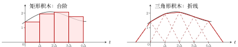
图 12 同一条 \(x(t)\)（灰色）。左：矩形积木互不重叠，每个 \(t\) 只有一块起作用，拼出台阶。右：底宽 \(2\Delta\) 的三角形积木（虚线）相邻两块重叠，每个 \(t\) 上有两块起作用，相加得到经过各采样点 \(\big(k\Delta,x(k\Delta)\big)\) 的折线（红实线）。两端的斜边是最外两块三角形的一半，没有邻居与它相加。右图的结论存疑，见上文。
▸ 取极限。 \(\Delta\) 取得特别小时，阶梯函数与 \(x(t)\) 保持一致：
4.2 第二步：逐条性质推出输出¶
| 输入 | 输出 | 依据 |
|---|---|---|
| \(\delta_\Delta(t)\) | \(h_\Delta(t)\) | \(h_\Delta(t)\) 的定义 |
| \(\delta_\Delta(t-k\Delta)\) | \(h_\Delta(t-k\Delta)\) | 时不变性：输入右移 \(k\Delta\)，输出也右移 \(k\Delta\) |
| \(x(k\Delta)\,\delta_\Delta(t-k\Delta)\cdot\Delta\) | \(x(k\Delta)\,h_\Delta(t-k\Delta)\cdot\Delta\) | 齐次性：系数 \(a=x(k\Delta)\cdot\Delta\) |
| \(\sum_{k=-\infty}^{+\infty}x(k\Delta)\,\delta_\Delta(t-k\Delta)\cdot\Delta\) | \(\sum_{k=-\infty}^{+\infty}x(k\Delta)\,h_\Delta(t-k\Delta)\cdot\Delta\) | 叠加性：输入全部加起来，输出也全部加起来 |
最后一行左边就是 \(x_\Delta(t)\)（第一步）。所以阶梯函数 \(x_\Delta(t)\) 的输出是 \(\sum_k x(k\Delta)\,h_\Delta(t-k\Delta)\cdot\Delta\)。
4.3 第三步：令 \(\Delta\to0\)，求和变成积分¶
两边同时令 \(\Delta\to0\)。左边 \(\lim x_\Delta(t)=x(t)\)，所以 \(x(t)\) 通过 LTI 的输出 \(y(t)\) 为
▸ 第二个等号。 \(h_\Delta\) 换成 \(h\)，因为 \(\Delta\to0\) 时 \(h_\Delta(t)\) 趋于 \(h(t)\)（冲激响应的定义）。
▸ 第三个等号。 这就是积分的定义（黎曼和取极限）：
| 求和里的 | 积分里的 | 含义 |
|---|---|---|
| \(k\Delta\) | \(\tau\) | 第 \(k\) 块所在的位置 |
| \(\Delta\) | \(\mathrm{d}\tau\) | 每块的宽度 |
| \(\displaystyle\lim_{\Delta\to0}\sum_{k=-\infty}^{+\infty}\) | \(\displaystyle\int_{-\infty}^{+\infty}\) | 把所有块加起来 |
说明
推导中有两处默认成立：一是 \(h(t)=\lim_{\Delta\to0}h_\Delta(t)\) 这个极限存在；二是输入取极限（\(x_\Delta\to x\)）时，输出也取对应的极限。对后面遇到的系统，这两点都成立。
4.4 结论：卷积积分¶
重点
若 \(\delta(t)\xrightarrow{\ \text{LTI}\ }h(t)\)，则任意 \(x(t)\) 通过同一个 LTI，输出为
-
\(\delta(t)\)：冲激函数；\(h(t)\)：冲激响应。
-
这个公式定义为 \(x(t)\) 与 \(h(t)\) 的卷积(convolution)，记作 \(x(t)\ast h(t)\)。
-
和离散一样：只要知道 \(h(t)\)，就能求出任意输入的输出。
5 离散卷积与连续卷积；「卷积」名字的由来¶
5.1 两个公式对照¶
重点
这两个公式要能倒背如流。
| 离散 | 连续 | |
|---|---|---|
| 基本输入 | 单位脉冲 \(\delta[n]\) | 冲激函数 \(\delta(t)\) |
| 它的输出 | 单位脉冲响应 \(h[n]\) | 冲激响应 \(h(t)\) |
| 求和变量 | \(k\)（整数） | \(\tau\)（实数） |
| 合成方式 | 求和 \(\sum\) | 积分 \(\int\cdots\mathrm{d}\tau\) |
| 推导方式 | 拆成脉冲，直接相加，结果精确 | 拆成窄方波，相加后再令 \(\Delta\to0\) |
5.2 卷积的四步与名字¶
把 \(h(t-\tau)\) 写成 \(h[-(\tau-t)]\)：
从里往外读，正好是卷积的四步：
-
翻转：\(h(\tau)\to h(-\tau)\)，沿纵轴翻过来；
-
平移：\(h(-\tau)\to h[-(\tau-t)]\)，平移 \(t\)；
-
相乘：与 \(x(\tau)\) 相乘；
-
积分（离散时是求和）：对 \(\tau\) 积分，得到 \(y(t)\) 在这一个 \(t\) 上的值。
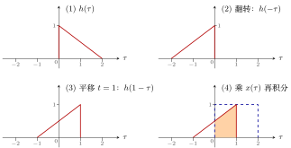
图 13 以 \(h(\tau)\) 为 \([0,2]\) 上从 \(1\) 降到 \(0\) 的斜线、\(x(\tau)\) 为 \([0,2]\) 上高度 \(1\) 的方波（图 (4) 中蓝虚线）为例求 \(y(1)\)。翻转、平移后 \(h(1-\tau)\) 在 \([-1,1]\) 上，与 \(x(\tau)\) 重叠在 \([0,1]\)，乘积从 \(0.5\) 升到 \(1\)，橙色面积 \(=\frac{0.5+1}{2}\times1=0.75\)，即 \(y(1)=0.75\)。
重点
卷积(convolution)的名字取自四步中的两步：「卷」指翻转，「积」指相乘。